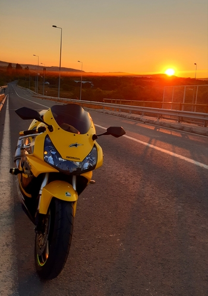

Моето слободно време го поминувам на различни начини. Како хоби, најмногу го сакам возењето мотор. Тоа е
мојата пасија уште како мал. Најчесто се организираме во група со пријатели - моторџии, одбираме дестинација,
облекуваме соодветна опрема, резервоарите полни и тргнуваме. Возењето мотор е моето омилено хоби. За мене
тоа е одлична релаксација и опуштање, тоа е време каде не размислувам на ништо друго освен на патот и моторот.
Освен со моторот, слободното време го поминувам и со друштвото. Најчесто некаде се собираме и раскажува секој
по нешто.
